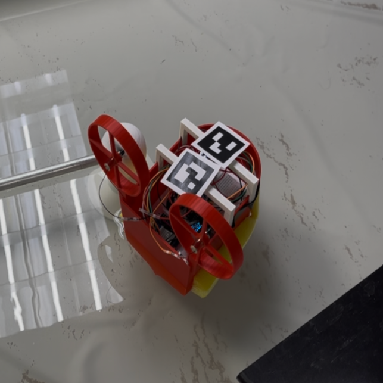
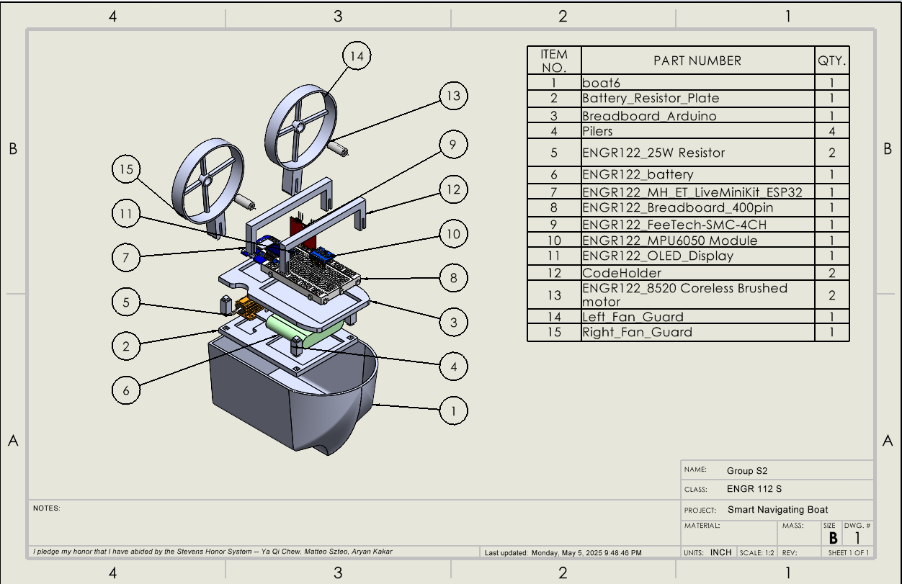
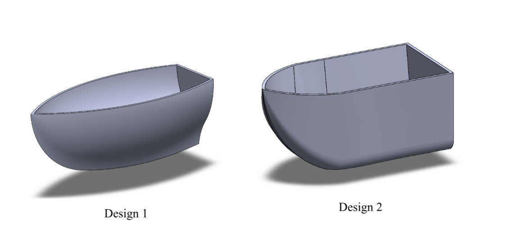

AUTONOMOUS SYSTEM
Smart Pool Navigation System
An autonomous boat designed and built to navigate a pool using visual markers, onboard sensors, and a custom control system.

The Problem
Design, build, and program a small autonomous boat capable of navigating a pool without direct manual control. The system needed to combine mechanical design, electronics, sensing, and control logic into one working prototype.
My Approach
I designed and modeled mechanical components in SolidWorks, fabricated parts using 3D printing, and integrated the mechanical system with an ESP32, motor controller, IMU, OLED display, and power system.

Navigation & Controls
The navigation system used ArUco tags for visual positioning and IMU heading data to determine orientation. A finite-state machine organized the boat's behavior into distinct navigation states.
Design Iteration
Design changes were made based on testing results, including adjustments to the hull shape, weight distribution, and sensor placement to improve stability and navigation accuracy.

- Design 1 - lacked space for the electronics, high center of gravity, instability
- Design 2 - increased in space for better electronic placement, hull shape caused drag and reduced speed.
Result
Add the measurable outcome here. For example: navigation accuracy, successful completion rate, operating time, weight, dimensions, or another meaningful performance metric.
What I Learned
Briefly explain one or two engineering lessons from the project—especially something that changed how you approach design, testing, or troubleshooting.